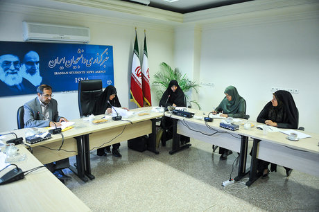
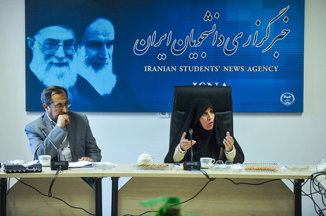

|
|
منیره نوبخت: حق اشتغال زنان را مشروط به فرزندآوری نکنیم
چهار شنبه3 مهر 1392
ایسنا: عضو شورای فرهنگی - اجتماعی زنان با تاکید برلزوم وضع قانون در زمینه مدیریت جمعیت و فرهنگسازی برای آن، گفت: برای فرزندآوری باید به دنبال مشوقهای قانونی باشیم نه ایجاد محدودیت، در قدمهای اول مطرح شدن طرح جامع «جمعیت و تعالی خانواده»، زنان احساس نگرانی میکنند و با قوانین محدودیتآور به طور قطع نمیتوان مسئله جمعیت را حل کرد.

به گزارش خبرنگار سرویس «زنان» خبرگزاری دانشجویان ایران(ایسنا)، منیره نوبخت در میزگرد بررسی طرح جامع «جمعیت و تعالی خانواده» که در ایسنا برگزار شد، نظرات کارشناسی خود را در مورد این طرح عنوان کرد.
ایسنا: چه قدر در طرح جامع «جمعیت و تعالی خانواده» بر فرهنگسازی و سبک زندگی اسلامی - ایرانی توجه شده است؟
منیره نوبخت: سابقه پرداختن به جایگاه خانواده، ازدواج و اهمیت فرزندآوری در شورای فرهنگی - اجتماعی زنان بیش از 10 سال است و بدین منظور اولین سند در این حوزه با نام سند سیاستهای تشویق، تحکیم و تعالی خانواده توسط شورای عالی انقلاب فرهنگی تهیه و در این شورا تصویب شد. اما تا امروز هیچ اقدامی برای اجرایی شدن آن انجام نشده است. سند سیاستهای تشویق، تحکیم و تعالی خانواده یکی از بهترین سندها در حوزه زنان است و بسیاری از مواقع ستاد ملی زن و خانواده و مجلس شورای اسلامی برای تدوین قوانین در حوزه مسایل روز به این سند مهم مراجعه کردهاند.
در گذشته دانشگاهها واحد درسی کنترل جمعیت و تنظیم خانواده را ارائه میدادند که تدریس این درس مبتنی بر مصوبه مجلس بود. در روزهای آغازین دولت نهم این موضوع را در شورای عالی انقلاب فرهنگی مطرح و آن را از ابعاد مختلف بررسی کردیم و طی نامه مفصل و محرمانهای به دکتر احمدینژاد، از او خواستیم که به این موضوع توجه کند؛ بنابراین شورای فرهنگی اجتماعی با سابقهای بیش از 10 سال به موضوع خانواده پرداخته، اما متاسفانه به اجرای مصوبات آن توجهی نشده است.
بسیاری از مصوبات شورای عالی انقلاب فرهنگی در حد سیاست باقی مانده و یکی از علل اجرایی نشدن سیاستهای مصوب شورای عالی این است که در قالب برنامه و قانون جایی نگرفته است. هر چند که سیاستهای مصوب این شورا لازم الاجراست، ولی برای قانونی شدن لازم است در مجلس بررسی شود.
ایسنا: چگونه میتوان سیاستهای تشویق فرزندآوری را اجرایی کرد؟
نوبخت: بر اساس تجربیاتی که به دست آوردهام، معتقدم که اگر بتوانیم راه اجرای سیاستهای تشویق فرزندآوری را در برنامههای پنج ساله و لوایح بودجه سالیانه باز کنیم، قطعا به نتایج بهتری دست خواهیم یافت؛ بنابراین بررسی این موضوع در مجلس لازم است. قطعا مجلس به کلیات طرح جامع «جمعیت و تعالی خانواده» رای خواهد داد، چرا که لزوم وضع قوانینی به منظور افزایش فرزندآوری احساس میشود.
قبول داریم که باید به موضوع مدیریت جمعیت بپردازیم، اما نگرانیهایی وجود دارد مبنی بر اینکه در سایه مدیریت جمعیت، اختیار و آزادی مردم سلب شود. درواقع ازدواج و فرزندآوری یک مسئله شخصی است و ما نمیتوانیم با قانون در حیطه این گونه مسائل وارد شویم. البته دولت میتواند این موضوع را مدیریت کند تا اتفاقات خوبی رخ دهد.
ایسنا: آیا طرح جامع «جمعیت و تعالی خانواده» مضر به حق فردی است؟
نوبخت: ممکن است افراد به هر دلیلی قصد فرزندآوری نداشته باشند و با توجه به آنکه فرزندآوری یک امر شخصی است، نمایندگان باید توجه داشته باشند که تعرضی به حوزه زندگی خصوصی افراد اعم از زن و مرد نکنند، چرا که انسان بر اساس قانون اساسی و دین اسلام به حکم انسان بودن دارای حقوقی است که از جمله آنها حق اشتغال است، بنابراین قانون نباید به گونهای وضع شود که مخل آزادی و مضر به حق فردی شود. این در حالیست که روح طرح جامع «جمعیت و تعالی خانواده» با این موضوع تناسبی ندارد.

با قوانین محدودیتآور نمیتوانیم مسئله جمعیت را حل کنیم
لازم است برای وضع قانون در زمینه مدیریت جمعیت، فرهنگسازی را مد نظر قرار دهیم و به دنبال مشوقهای قانونی باشیم، نه ایجاد محدودیت؛ بنابراین نباید اگر کسی فرزندآوری نکرد، او را تنبیه کنیم. باید نگاه ملی به موضوع افزایش جمعیت داشته باشیم، چون این موضوع گره محکمی با اقتدار ملی خورده است و باید از این نگاه فرهنگسازی و زوجین را تشویق به فرزندآوری کنیم. البته در حال حاضر در قدمهای اول مطرح شدن طرح جامع «جمعیت و تعالی خانواده»، زنان احساس نگرانی میکنند و با قوانین محدودیتآور به طور قطع نمیتوانیم مسئله جمعیت را حل کنیم.
مردان مراحل تحصیل دانشگاهی خود را به طور عادی طی میکنند، اما زنان دانشجو ممکن است هنگام تحصیل، باردار شوند و نیاز به شیردهی پیدا کنند، این در حالیست که مدت تحصیل دوره لیسانس برای زن و مرد چهار سال است. ممکن است زنان دانشجو به علت بارداری و شیردهی سنوات تحصیلشان افزایش یابد و از دانشگاه اخراج شوند؛ بنابراین لازم است این موارد در قانون اصلاح شود و دوره تحصیل زنان در دوره کارشناسی به گونهای تعریف شود تا آنان در صورت بارداری و شیردهی از دانشگاه اخراج نشوند. اگر بدین طریق قانونگذاری کنیم، طرح جامع «جمعیت و تعالی خانواده» به موفقیت دست مییابد.
نباید در قانون موارد محدودیتآور برای دختران وضع کنیم. به عنوان مثال قوانینی تصویب کنیم که در آنها شرط اشتغال، تأهل در نظر گرفته شود. در مقطعی این موضوع مطرح بود و من در همه جلسات با این موضوع مخالفت میکردم، چرا که در حال حاضر پسران در خواستگاری از دختران، از آنها درباره شغلشان میپرسند. بنابراین قرار دادن شرط تاهل برای اشتغال به ضرر افزایش آمار ازدواج است.
زنان ورای قانونهای موجود در ایران عاشق مادری و فرزندآوری هستند و مشکلات باعث شده است که بسیاری از آنان برای تامین معیشت به اشتغال روی بیاورند و در حال حاضر نیز بیشتر پسران تمایل به ازدواج با دخترانی دارند که شاغل هستند.
در بسیاری از موارد زنان آمادگی فرزندآوری را دارند، اما مردان چون خود را مسئول تامین هزینه و معاش خانواده میدانند، حاضر به داشتن فرزند نیستند. بنابراین نباید زنان را عامل کاهش فرزندآوری بدانیم.
به نظر نمیرسد که در قانون و شرع اسلام، تمام مسئولیت تربیت فرزند به دوش مادر گذاشته شده باشد، این در حالی است که گاهی آنقدر درباره این موضوع صحبت میشود که به نظر میرسد پدران هیچ مسئولیتی در قبال فرزندان خود ندارند؛ اما باید توجه داشت که نه در قرآن کریم و نه در قوانین ایران، مسئولیت تربیت فرزند فقط برای زنان نیست و مرد و زن با هم در این زمینه مسئولیت مشترکی دارند.
حق اشتغال را مشروط به فرزندآوری نکنیم، چرا که اشتغال حق هر زن و مردی است و به منظور افزایش فرزندآوری، لازم است مشوقهایی را قرار دهیم.
ایسنا: به نظر شما دولت بارمالی ناشی از اجرای این طرح را می پذیرد؟
نوبخت: تقریبا همه مواد طرح جامع «جمعیت و تعالی خانواده» بار مالی دارد؛ این در حالیست که مجلس اجازه ارائه طرحهایی را ندارد که بار مالی برای دولت در پی داشته باشد. در این شرایط مجلس دو راه در پیش رو دارد. ابتدا برای حل مسئله بار مالی ناشی از اجرای طرح جامع «جمعیت و تعالی خانواده» از دولت اجازه بگیرند و سپس قوانین را تصویب کنند یا اینکه موادی که متضمن تامین بار مالی است، در قالب لایحه از سوی دولت به مجلس شورای اسلامی ارائه شود؛ البته موادی که متضمن بیان کلیات باشد و چگونگی تخصیص بودجه و اجرا در آنها لحاظ نشده باشد، همانند مصوبات شورای عالی انقلاب فرهنگی است. ما نگران هستیم که مجلس با حذف تمام مواد، قانونی مشابه متن شورای عالی انقلاب فرهنگی را تصویب کند در حالی که چنین موضوعی سالها پیش در شورا تصویب شده بود.
منشور حقوق و مسئولیتهای زنان را شورای عالی انقلاب فرهنگی مصوب و مجلس آن را به قانون تبدیل و دولت را موظف به اجرای آن کرد، ولی هنوز این منشور اجرایی نشده است. درواقع فرهنگسازی در دستگاههای اجرایی با وضع یک قانون در مجلس به جایی نمیرسد؛ بلکه باید راهکارهای درست را در پیش گرفت. نباید موضوع مهمی مانند افزایش جمعیت را به گونهای غیرکارشناسی و عجولانه دنبال و موازی کاری کنیم.
در کل شاید نمایندگان مجلس به این نتیجه برسند که طرح جامع «جمعیت و تعالی خانواده» را کنار بگذارند و تنها یک ماده واحده برای مشخص کردن سمت و سوی افزایش رشد جمعیت تدوین کنند.